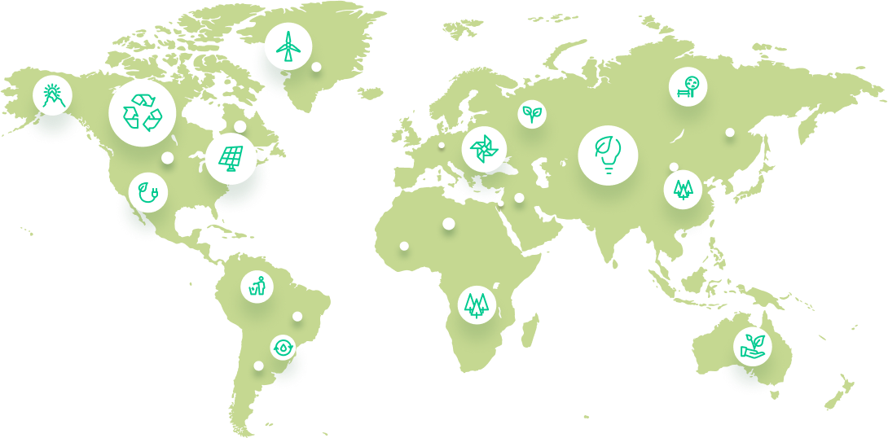

<section class="worldmap">
	<div class="container">
		<div class="worldmap__body">
			<span class="worldmap__info info-message">Cloverly API</span>
			<h2 class="worldmap__title">Offset Your Carbon Footprint in Real Time</h2>
			<p class="worldmap__text">Cloverly's powerful API calculates the impact of common carbon-intensive activities in real time and uses verified, quality carbon offset projects to neutralize them. Ready to get started? Create an account to integrate the Cloverly API for free, or contact us for custom solutions.</p>
			<div class="worldmap__btns">
				<a href="#" class="btn btn--green worldmap__btn">Get Started for Free</a>
				<a href="#" class="btn btn--dark worldmap__btn">Let's Talk</a>
			</div>

			<div class="worldmap__map">
				<div class="worldmap__map-img">
					
				</div>
			</div>
		</div>
	</div>
</section>
